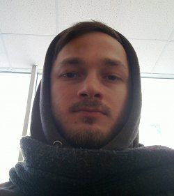

Меня зовут Николай Морев. Вы можете связаться со мной по email kolyuchiy@gmail.com.
Сейчас я работаю в компании DENIVIP Media программистом и занимаюсь в основном разработкой под Apple iOS.
Мои интересы: современные интернет-технологии и тенденции, мобильная разработка, web-разработка, администрирование UNIX-систем.
